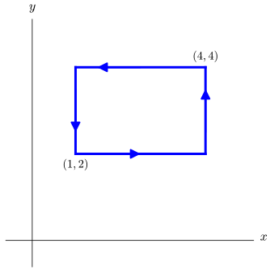
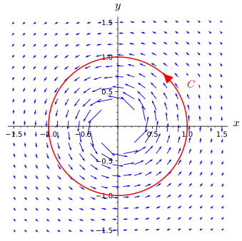
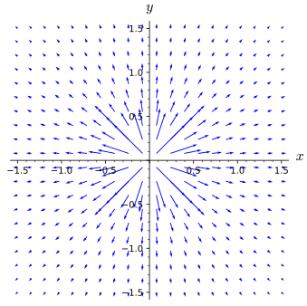
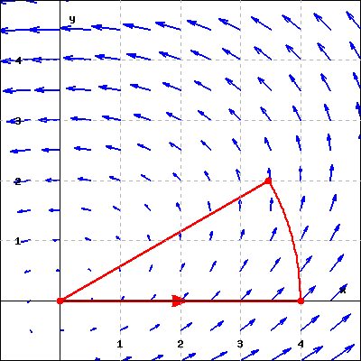
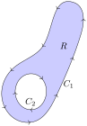
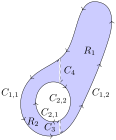

How can we calculate the circulation of a two-dimensional vector field \(\vF\) around a closed curve when \(\vF\) is not path-independent?
What is the meaning of the double integral of the circulation density of a smooth two-dimensional vector field on a region \(R\) bounded by a closed curve that does not intersect itself?
We know from Section 13.4 that a vector field is path-independent if and only if the circulation around every closed curve in its domain is \(0\text{.}\) It is probably not surprising that, given the multitude of names we have for path-independent vector fields, they are important vector fields that arise frequently. However, not every vector field is path-independent, and many times we will want to calculate the circulation around a closed curve in a vector field that is not path-independent. This section explores a connection between line integrals and double integrals that you may find surprising. It will be the first of three major theorems that connect types of integrals that seem very different on the surface.
Preview Activity13.8.1.
We will consider the vector field \(\vF = \langle 2y,3x^2 y\rangle\text{,}\) which is defined on the entire \(xy\)-plane. Suppose that we want to calculate the circulation of \(\vF\) around the circle \(C\) of radius \(2\text{,}\) centered at \((0,0)\text{,}\) and oriented counterclockwise.
(a)
Verify that \(\vF\) is not path-independent by calculating the circulation of \(\vF\) around the circle \(C\text{.}\) The SageMath cell below is set up to assist you with this, but you will need to supply a parametrization of \(C\) on line 4.
(b)
Recall from Section 13.7 that if \(\vF = \langle F_1(x,y),F_2(x,y)\rangle\) is a vector field, then the circulation density (in 2D) is given by
\begin{equation*}
\text{Circulation Density at the point }(a,b)= \frac{\partial F_2}{\partial x} (a,b)-\frac{\partial F_1}{\partial y} (a,b)
\end{equation*}
What is the circulation density of \(\vF = \langle 2y,3x^2 y\rangle\text{?}\)
(c)
Sketch the curve \(C\) and shade the region it bounds. Describe the region bounded by \(C\) in both rectangular and polar coordinates.
(d)
Calculate the double integral of \(\displaystyle \frac{\partial F_2}{\partial x} - \frac{\partial F_1}{\partial y}\) over the region inside the circle \(C\text{.}\) This integral is not the most fun to do by hand, so a SageMath cell has been provided to assist you.
Hint.
If you choose polar coordinates, use \(\theta\) for the first variable and \(r\) for the second variable.
(e)
What do you notice about your results to parts (a) and (d)? Do you think this will happen in general? Write a sentence or two about what you think is happening here.
A natural question after completing the Preview Activity is if there is something special about the vector field \(\vF\) or the curve \(C\) that led to the results you obtained, and investigating this will be our principal task in this section.
Subsection13.8.1Circulation
In Preview Activity 13.8.1, you integrated the circulation density of a smooth vector field over a disk and found the result was equal to the circulation of the vector field along the region’s circular boundary. This relationship is the theme of this section. To see why this would make sense, consider the region \(R\) bounded by the curve \(C\) shown in Figure 13.8.1. We have placed a square grid inside \(R\) to suggest the idea of breaking \(R\) up into many smaller regions, most of which are square. This idea should make you think of the methods we have already seen of breaking up a region into smaller and smaller regions for Riemann sums.
Figure13.8.1.A region bounded by a curve
The critical idea here is that if we integrate the circulation density over each of the small regions and add those up, this is the same as integrating the circulation density over the entirety of the region \(R\) because of the fundamental properties of integrals. Also, integrating circulation per unit area over a two-dimensional region should be related to the total circulation on that region. Now look at Figure 13.8.2 and think of these two square regions as being two of the square regions inside \(R\) in Figure 13.8.1.
A rectangular region in the plane that is bounded by a closed curve oriented counterclockwise. The square is divided into two squares of equal size, which are labeled as \(R_1\) and \(R_2\text{.}\) There are circular arrows inside each of the smaller regions indicating counterclockwise orientations.
Figure13.8.2.A square region divided into two smaller squares
We orient the boundary \(C_i\) of square region \(R_i\) in the manner suggested by the circular arrows. This means that the vertical boundary in common between \(R_1\) and \(R_2\) is oriented up when we calculate the line integral \(\oint_{C_1}\vF\cdot d\vr\) and oriented down when we evaluate \(\oint_{C_2}\vF\cdot d\vr\text{.}\) Thus, this line segment does not contribute to the sum \(\oint_{C_1}\vF\cdot d\vr + \oint_{C_2}\vF\cdot d\vr\text{.}\) Therefore,
is equal to the line integral of \(\vF\) along the boundary of the large rectangle.
Returning to Figure 13.8.1, if we find the circulation along the boundary of each of the smaller regions, the line integrals along the boundaries that lie inside the region \(R\) will all offset. Thus the value should equal \(\oint_C\vF\cdot d\vr\text{.}\) If we make our grid fine enough, all of the smaller regions into which \(R\) is divided will be very close to rectangular.
The calculation of circulation around a nice closed curve will be the sum of the circulation over pieces that enclose the same area, regardless of the size or number of the pieces used. In other words,
where \(C_i\) is a bounding curve for subregion \(R_i\text{.}\) We defined our circulation density as the ratio of circulation to area, so we can also subsititute the circulation around a region for the circulation density times the area of that region. Additionally, we can take the limit as our regions get smaller, since size and the number of regions does not affect the sum. Letting \(\Delta R_i\) represent the area of region \(R_i\) with boundary curve \(C_i\text{,}\) we have
This expression should look familiar as the Reimann sum definition for the double integral of \(\frac{\partial F_2}{\partial x}-\frac{\partial F_1}{\partial y}\) over the region \(R\text{.}\) For “nice” closed curves we can equate the circulation around the boundary (computed as a line integral) with a double integral of the circulation density over the region enclosed (computed with a double integral).
Subsection13.8.2Green’s Theorem
So far in this section, we have restricted ourselves to relatively nice closed curves when thinking about circulation. While the main theorem of this section will not allow us to consider arbitrary closed curves, it does cover more varied curves than we have discussed so far. A simple closed curve is a closed curve that does not cross itself, and these are the curves to which our next theorem applies.
Theorem13.8.3.Green’s Theorem.
Let \(C\) be a simple closed curve in the plane that bounds a region \(R\) with \(C\) oriented in such a way that when walking along \(C\) in the direction of its orientation, the region \(R\) is on our left. Suppose that \(\vF=\langle F_1,F_2\rangle\) is vector field with continuous partial derivatives on the region \(R\) and its boundary \(C\text{.}\) The circulation of \(\vF\) along \(C\) may be calculated as
At first glance, it may seem that Green’s Theorem is of purely intellectual interest. However, we have already encountered situations where parameterizing a curve can be complicated. This is particularly true when the curve has “corners” that require us to give separate parametrizations for several pieces of the curve, such as with the rectangular curve pictured in Figure 13.8.4. However, as with this rectangle, is often the case that a curve that is difficult to parametrize bounds a region that is not too complex to describe using rectangular or polar coordinates. For instance, the rectangular region in Figure 13.8.4 can be described as \(1\leq x\leq 4\) and \(2\leq y\leq 4\text{,}\) which is a simpler description than needing to parameterize each of the four sides of the rectangle separately. Additionally, the integrand of the double integral in Green’s Theorem involves partial derivatives that can sometimes result in an integrand that is easy to work with. The purpose of Green’s Theorem is, at its core, to allow you to exchange one type of integration problem (a line integral) for another type of integration problem (a double integral). This will be a recurring theme as this chapter continues.

A rectangular curve in the \(xy\)-plane. The lower-left corner is labeled \((1,2)\text{.}\) The upper-right corner is labeled \((4,4)\text{.}\) The curve is oriented counterclockwise.
Figure13.8.4.A rectangular curve
Example13.8.5.
We will verify Green’s Theorem by computing both sides of the equation separately when \(\vF =\langle x^2-xy,y^2-2x \rangle \) and \(C\) is the bounding curve given in Figure 13.8.4.
First, we calculate the double integral (the right hand side of the equation in Green’s Theorem). The circulation density of \(\vF = \langle x^2-xy,y^2-2x \rangle \) will be \(-2+x\text{,}\) which is continuous everywhere in the region \(R\text{.}\) Our iterated itegral becomes
\begin{align*}
\iint_R \left(\frac{\partial F_2}{\partial x} - \frac{\partial F_1}{\partial y}\right)\, dA \amp = \int_2^4 \int_1^4 (-2+x) \, dx \, dy \\
\amp = \int_2^4 \left[-2x+x^2/2\right]_{x=1}^{x=4} \, dy \\
\amp = \int_2^4 \frac{3}{2} \, dy \\
\amp = 3
\end{align*}
Note how easy it is to set up and evaluate this double integral.
We will need to compute the line integral of \(\vF\) over the four segements of the bounding rectangle. We will use the following parameterizations:
For each of the curves described below, find the circulation of the given vector field around the curve. Do this both by calculating the line integral directly as well as by calculating the double integral from Green’s Theorem.
(a)
The curve \(C_1\) is the circle of radius \(3\) centered at the point \((2,1)\) (oriented counterclockwise) and the vector field is \(\vF = \langle
y^2, 5x+2xy\rangle\text{.}\)
(b)
The curve \(C_2\) is the triangle with vertices \((0,0)\text{,}\)\((3,0)\text{,}\) and \((3,3)\) (oriented counterclockwise) and the vector field is \(\vG = \langle y^2, 3xy\rangle\text{.}\)
Generally, Green’s Theorem is useful for allowing us to calculate line integrals by instead calculating a double integral. Going the other direction is harder, since finding a vector field \(\langle F_1,F_2\rangle\) so that \(\partial F_2/\partial x - \partial F_1/\partial y\) is equal to the integrand in the double integral can be difficult. However, the exercises will explore some situations where calculating a suitable line integral is a viable alternative to the double integral.
Subsection13.8.3What happens when vector fields are not smooth?
Notice that the assumptions in Green’s Theorem require that the region \(R\) be bounded by a simple closed curve \(C\) and that the vector field have continuous partial derivatives on \(R\) and \(C\text{.}\) In Exercise 7, we will explore what happens when the region \(R\) cannot be bounded by a simple closed curve, as sometimes multiple applications of Green’s Theorem can be used in those circumstances. Now, however, we will take a look at what happens in some cases where the vector field \(\vF\) is not smooth.
Activity13.8.3.
Consider the vector field \(\vF =
\displaystyle\frac{-y}{{x^2+y^2}}\vi +
\frac{x}{{x^2+y^2}}\vj\text{.}\) Notice that \(\vF\) is smooth everywhere in the plane other than at the point \((0,0)\text{.}\) This vector field is plotted in Figure 13.8.6, but we have not plotted the vectors close to the origin as their magnitudes get so large that they make it hard to interpret the figure. Here Green’s Theorem applies to any simple closed curve \(C\) that neither passes through \((0,0)\) nor bounds a region containing \((0,0)\text{.}\)

Figure13.8.6.The vector field \(\vF\)
(a)
Find the circulation density of \(\vF\) (i.e., the integrand of the double integral in Green’s Theorem).
Hint.
Make sure to note any exceptional points at which your formula is not valid.
(b)
Suppose that \(C\) is the unit circle centered at the origin. Without doing any calculations, what can you say about \(\oint_C \vF\cdot d \vr\text{?}\) what does this tell you about if \(\vF\) is path-independent?
(c)
What would you get if you integrated the circulation density of \(\vF\) over the region bounded by \(C\text{?}\)
(d)
Do the previous two parts contradict Green’s Theorem? Explain your reasoning.
(e)
Is the vector field \(\vG =
\displaystyle\frac{x}{x^2+y^2}\vi +\frac{y}{x^2+y^2}\vj\text{,}\) which is shown in Figure 13.8.7, path-independent? Why or why not?

Figure13.8.7.The vector field \(\vG\)
(f)
Suppose that \(C\) is the unit circle centered at the origin. Find \(\oint_C \vG\cdot d \vr\text{.}\) Can you do this using Green’s Theorem?
We can now see that Green’s Theorem is a powerful tool. However it cannot be used for all line integrals. In particular, the restriction that the vector field be smooth on the entire region bounded by a simple closed curve \(C\) creates limitations. This can occur even in cases where holes in the vector field’s domain or points where the vector field is not continuously differentiable lie away from \(C\text{.}\)
Subsection13.8.4Summary
Green’s Theorem tells us that we can calculate the circulation of a smooth vector field along a simple closed curve that bounds a region in the plane on which the vector field is also smooth by calculating the double integral of the circulation density instead of the line integral.
Integrating the circulation density of a smooth vector field on a region bounded by a simple closed curve gives the same value as calculating the circulation of the vector field around the boundary of the region with suitable orientation.
(a)\(C\) is the circle \((x-3)^2+(y-4)^2=25\) oriented counterclockwise.
\(\int_C \left(8 (x^2-y)\vec i + 7(y^2+x)\vec j\right) \cdot d\vec r =\)
(b)\(C\) is the circle \((x-a)^2+(y-b)^2=R^2\) in the \(xy\)-plane oriented counterclockwise.
\(\int_C \left(8 (x^2-y)\vec i + 7(y^2+x)\vec j\right) \cdot d\vec r =\)
2.
Let \(\vec F = 4 x e^{y}\,\vec i + 2 x^2 e^{y}\,\vec j\) and \(\vec G = 4(x - y)\,\vec i + 2(x + y)\,\vec j\text{.}\) Let \(C\) be the path consisting of lines from \((0,0)\) to \((8,0)\) to \((8,3)\) to \((0,0)\text{.}\) Find each of the following integrals exactly:
(a)\(\int_{C}\vec F\cdot d\vec r =\)
(b)\(\int_{C}\vec G\cdot d\vec r =\)
3.
Suppose
\begin{equation*}
\vec{F}(x,y) = (2 x - 4 y) \vec{i} + 2 x \vec{j}
\end{equation*}
and \(C\) is the counter-clockwise oriented sector of a circle centered at the origin with radius \(4\) and central angle \(\pi / 6\text{.}\) Use Green’s theorem to calculate the circulation of \(\vec{F}\) around \(C\text{.}\)
Circulation =

(Click on graph to enlarge)
4.
Let \(\vec F = (9 x^2 y + 3 y^3 + 6 e^x)\,\vec i + (5 e^{y^2} + 81 x)\,\vec j\text{.}\) Consider the line integral of \(\vec F\) around the circle of radius \(a\text{,}\) centered at the origin and traversed counterclockwise.
(a) Find the line integral for \(a=1\text{.}\)
line integral =
(b) For which value of \(a\) is the line integral a maximum?
\(a =\)
(Be sure you can explain why your answer gives the correct maximum.)
5.
(a) Show that each of the vector fields \(\vec F = 2y\,\vec i + 2x\,\vec j\text{,}\)\(\vec G = \frac{2 y}{x^2 + y^2}\,\vec i + \frac{-2 x}{x^2 + y^2}\,\vec j\text{,}\) and \(\vec H = \frac{ x}{\sqrt{x^2 + y^2}}\,\vec i + \frac{ y}{\sqrt{x^2 + y^2}}\,\vec j\) are gradient vector fields on some domain (not necessarily the whole plane) by finding a potential function for each.
For \(\vec F\text{,}\) a potential function is \(f(x,y) =\)
For \(\vec G\text{,}\) a potential function is \(g(x,y) =\)
For \(\vec H\text{,}\) a potential function is \(h(x,y) =\)
(b) Find the line integrals of \(\vec F,\vec G,\vec H\) around the curve \(C\) given to be the unit circle in the \(xy\)-plane, centered at the origin, and traversed counterclockwise.
\(\int_C\vec F\cdot d\vec r =\)
\(\int_C\vec G\cdot d\vec r =\)
\(\int_C\vec H\cdot d\vec r =\)
(c) For which of the three vector fields can Green’s Theorem be used to calculate the line integral in part (b)?
It may be used for
only F
only G
only H
F and G
F and H
G and H
F, G and H
(Be sure that you are able to explain why or why not.)
6.
Sometimes, the value in Green’s Theorem is in converting a double integral into a line integral. Recall that the area of a region \(R\) in the plane can be found by calculating \(\iint_R 1\, dA\text{.}\)
(a)
Find a smooth vector field \(\vF\) such that the circulation density of \(\vF\) is \(1\) everywhere.
Hint.
There are several ways to choose \(\vF = \langle
F_1,F_2\rangle\) so that \(\partial F_2/\partial x -
\partial F_1/\partial y = 1\text{.}\)
(b)
Write out both integrals in Green’s Theorem for the vector field you selected in part a.
(c)
For positive real numbers \(a,b\text{,}\) the ellipse \(x^2/a^2 + y^2/b^2 = 1\) can be parametrized as \(\vr(t) = \langle a\cos(t),b\sin(t)\rangle\) with \(0\leq t\leq 2\pi\text{.}\) Find the area of this ellipse by calculating a line integral.
(d)
Find another vector field \(\vG\) (different from the one you found in part a) that has circulation density \(1\) everywhere, and calculate the area of the ellipse in part c by calculating the circulation of \(\vG\) along the ellipse.
(e)
How many possible vector fields are there with circulation density \(1\) everywhere? Why?
7.
The types of regions in \(\R^2\) to which Green’s Theorem applies are formally called simply connected regions. To be precise, a simply connected region \(D\) in \(\R^2\) is a set so that there is a path between every pair of points in \(D\) that stays inside \(D\) and any simple closed curve in \(D\) can be shrunk to a point while remaining inside \(D\text{.}\) We can think of a simply connected region as being a region that does not have any “holes”. There are many instances where we can find a way to apply Green’s Theorem multiple times to work with regions that are not simply connected, however.
Figure13.8.8.A region that is not simply connected
Figure13.8.9.Breaking up a region
Explain why the region \(R\) in Figure 13.8.8 is not simply connected.
If we let \(C = C_1 + C_2\text{,}\) then the orientation of \(C\) is as required by Green’s Theorem—when walking along the pieces of \(C\text{,}\) the region \(R\) is always on the left-hand side. Assume that \(\vF\) is a vector field that is smooth on \(R\) and \(C\text{.}\) Using Figure 13.8.9 as a guide, write \(\oint_C \vF\cdot d\vr\) as a sum of double integrals, one over \(R_1\) and the other over \(R_2\text{.}\)
In Activity 13.8.3, we considered the vector field \(\vF =
\displaystyle\frac{-y}{{x^2+y^2}}\vi +
\frac{x}{{x^2+y^2}}\vj\) and found that the circulation of \(\vF\) around the unit circle centered at the origin (oriented counterclockwise) was \(2\pi\text{.}\) Show that for every simple closed curve \(C\) in the plane that bounds a region containing the origin, \(\oint_C\vF\cdot d\vr = 2\pi\text{.}\)
Hint.
For part c, create a region \(R\) as in Figure 13.8.8 using the curve \(C\) in place of \(C_1\text{.}\)
8.
This exercise presents another occasion where Green’s Theorem can be used to convert a double integral into a line integral.
Recall from Section 12.4 that the centroid of a lamina \(D\) of area \(A\) is given by
where \(C\) is the boundary of the lamina \(D\text{.}\)
Find the centroid of the triangle with vertices \((0,0)\text{,}\)\((a,0)\text{,}\) and \((0,b)\) for real numbers \(a,b>0\text{.}\)
Subsection13.8.6Notes to Instructors and Dependencies
This section relies on the calculation of circulation around a closed curve from Section 13.2 and Section 13.3 as well as the idea of circulation density that was described in Section 13.6.